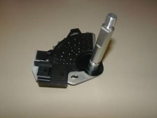
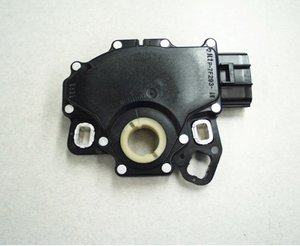
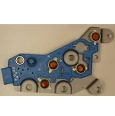
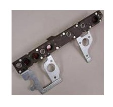

Transmission Pressure Switches and Rotary Position Sensors
Title
Mechanical Design Engineer, Sustaining
Summary
Trial by fire, my first project assigned at Sensata was a group of sustaining engineering programs. All designed at least 10 years before I joined the company, I was responsible for customer management, design validation, and change management. Representing 30+ sensors with over 40MU/year, the variety of projects, and problems I encountered provided an exceptional baseline of knowledge for the New Product Development (NPD) programs I would work on later in my career.
Skills
plastic injection molding, stamping, vibration analysis, hardness measurement, plating process refinement, DOE, customer management, factory line audit, failure analysis, design validation, APQP
Photos
 Fig. 1: Internal Mode Switch (IMS) communicates the location of the transmission shifter (P,R,N,D or L) to the car ECU
 Fig. 2: Transmission Range Sensor (TRS), same purpose as an IMS but the TRS can be mounted external to the transmission and is significantly more complex in design due to needs for environmental sealing
 Fig. 3: Pressure Switch Manifold (PSM), one of many PSM devices I was responsible for, this particular design was a ‘modular’ style, which meant that each pressure switch was mounted to the manifold rather than integrated. The pressure switches picked up shifts in the transmission and communicated this dat to the ECU
 Fig. 4: Integrated PSM, built on a highly automated line, this device had all actuators integrated in the multi-layer package.